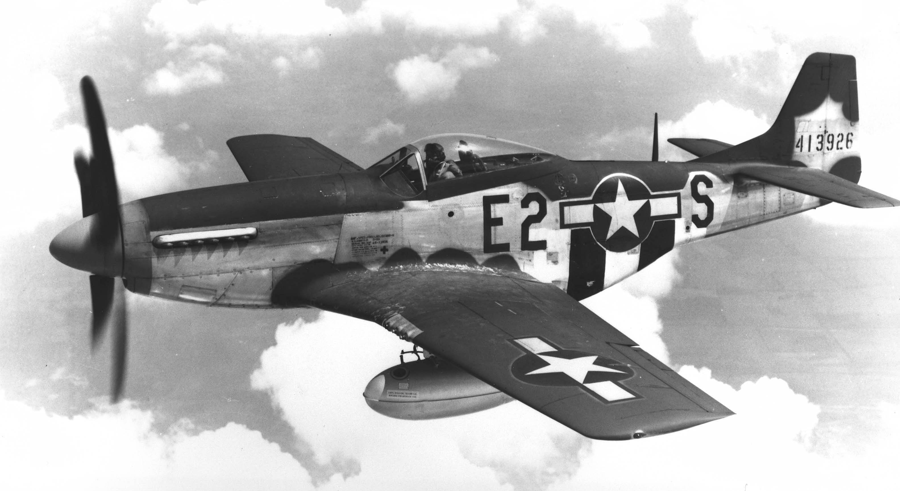

The Mustang was powered by a Rolls-Royce Merlin engine and was known for its exceptional
range, speed, and maneuverability. The P-51 Mustang was first flown in 1940 and was first
used by the British Royal Air Force as a fighter-bomber. However, it wasn't until the
aircraft was fitted with the Rolls-Royce Merlin engine that it truly came into its own.
The new engine not only provided the Mustang with much-needed additional power, but it
also greatly improved the aircraft's high-altitude performance.